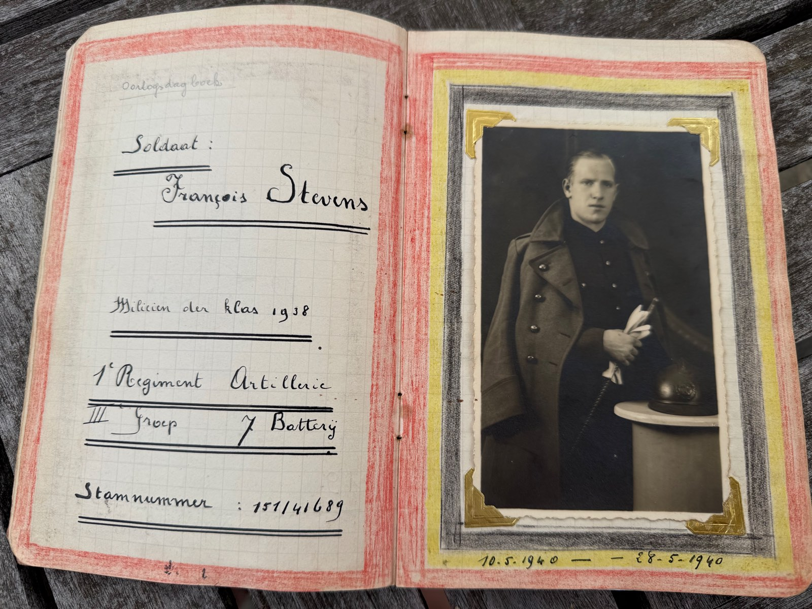
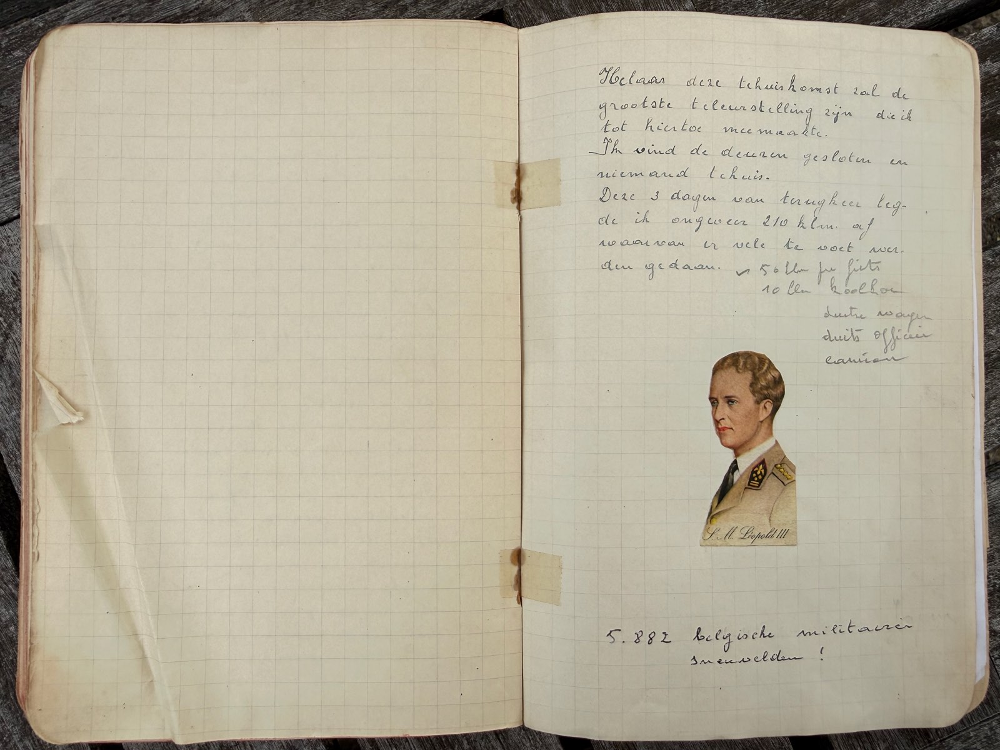

Na een mobilisatie van 259 dagen wordt het Belgische leger op 10 mei 1940 in de oorlog tegen Duitsland betrokken. François Stevens, kleermaker en magazijnier van zijn batterij, dient aan het kanon T.R.A. 75 — n° 211.
In een geruit schoolschriftje, versierd met de Belgische driekleur, hield hij dag na dag bij wat zijn batterij overkwam: van de eerste Duitse verkenningsvliegtuigen boven Diepenbeek tot de capitulatie, de krijgsgevangenschap en zijn ontsnapping — in burgerkleren, met een geleende kinderwagen, terug naar huis.
«Samen met de geallieerde legers zullen wij den vijand bestrijden.»
Van Diepenbeek tot Hooglede — en te voet, per fiets en op Duitse camions weer naar huis.
Klik op de punten voor een fragment uit het dagboek.
De volledige transcriptie, in de woorden en de spelling van 1940.
«Helaas, deze tehuiskomst zal de grootste teleurstelling zijn die ik tot hiertoe meemaakte. Ik vind de deuren gesloten en niemand tehuis.»
In drie dagen legde François Stevens zo'n 210 kilometer af — per fiets, op een koolkar, te voet en op Duitse vrachtwagens. Achteraan in het schriftje plakte hij een portret van koning Leopold III, met daaronder één zin:
5.882 Belgische militairen sneuvelden
